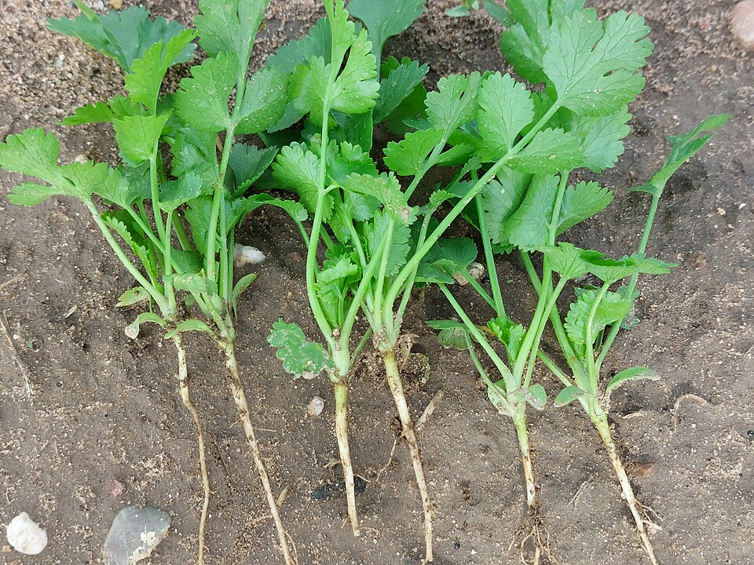

Coriandolo: uso tradizionale, proprietà e avvertenze
Coriandrum sativum

Erba annuale della famiglia delle Apiaceae, coltivata in tutto il mondo. Si usano le foglie e i semi, in cucina e nella tradizione popolare.
Proprietà attribuite dalla tradizione
- Uso tradizionaleNelle tradizioni di India, Pakistan, Iran, Turchia e Marocco è usato per disturbi digestivi, flatulenza, diarrea e come diuretico (fonte: review Mahleyuddin 2022)
- Evidenza preliminareL'olio essenziale è ricco di linalolo; negli studi di laboratorio e sugli animali sono state osservate attività antiossidanti, ipolipemizzanti e antipertensive
- Evidenza preliminareLa review riconosce che gli studi cardiovascolari sono quasi tutti su animali o in vitro: su diciotto studi, due sono clinici, e servono altre sperimentazioni sull'uomo
Uso tradizionale
Come spezia in cucina, con foglie e semi. Nella tradizione i semi si usano in infuso o come spezia; in Iran e Turchia per la digestione, come diuretico e per ansia e insonnia; in Marocco e Arabia Saudita per la glicemia. Gli usi medicinali sono tradizionali e non dimostrati: le fonti consultate non contengono studi clinici sufficienti a confermarli.
Avvertenze e controindicazioni
La review non riporta dati di tossicità né dosi di sicurezza per l'uso umano. L'olio essenziale è concentrato e non equivale all'uso culinario delle foglie e dei semi. Consultare il medico in caso di diabete, malattie renali o terapie per pressione e colesterolo, perché gli studi sugli animali riportano effetti su glicemia, pressione e lipidi. Avvertenza sulla preparazione: alimento, infuso, estratto e olio essenziale non sono equivalenti, e le indicazioni di sicurezza di una preparazione non valgono automaticamente per le altre.
Fonti verificate a novembre 2026.